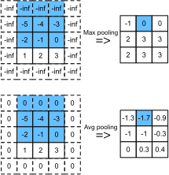

池化#
本节讨论如何使用 TVM 进行池。Pooling 是 CNN 中常见的算子，如果你不熟悉它，请参考 D2L 的 6.5 章节。在这里将跳过为什么，只关注如何。
池有两种类型，max pooling 返回池的最大值，avg pooling 返回池的平均值。为了简单起见，在本节中处理 2D 池化。与 conv2d 一样，池化算子在特征图中移动了池化核。有时需要填充以匹配所需的输出大小。Pooling 比 conv2d 的计算量要少得多，因为它只需要得到最大值或平均值。它是 memory-bound 算子。
2D 最大值和平均池化。蓝色形状表示特定的池化步骤。注意，除了算法之外，填充值也不同。 说明了 2D max pooling 和平均 pooling 是如何工作的，使用以下设置：kernel 尺寸 [3,3]， stride [1,1]， padding[1,1]。

2D 最大值和平均池化。蓝色形状表示特定的池化步骤。注意，除了算法之外，填充值也不同。#
import tvm
from tvm import te
from tvm_book.contrib import d2ltvm
定义计算#
pooling 的计算方式类似于 conv，所以你会发现下面的池化定义代码接受与 卷积 中定义的 conv 相似的参数。池化的输出大小也可以通过重用 conv_out_size 方法来计算。
使用不同的 te.compute 在同一方法中包含两种类型的 pooling。如果未指定 pool_type，则该方法将抛出错误。使用 te.max 来执行 max pooling 和 te.sum 和元素除法来执行 avg pooling。此外，还请注意 max pooling 的填充值是 te.min_value，而 avg pooling 为 0。
# Save to the d2ltvm package.
def pool(pool_type, c, nh, nw, kh, kw, ph=0, pw=0, sh=1, sw=1):
"""2D pooling
pool_type: pooling type, 'max' or 'avg'
c : channels
nh, nw : input width and height
kh, kw : kernel width and height
ph, pw : height and width padding sizes, default 0
sh, sw : height and width strides, default 1
"""
# reduction axes
rkh = te.reduce_axis((0, kh), name='rkh')
rkw = te.reduce_axis((0, kw), name='rkw')
# output height and weights
oh = d2ltvm.conv_out_size(nh, kh, ph, sh)
ow = d2ltvm.conv_out_size(nw, kw, pw, sw)
# pad X and then compute Y
X = te.placeholder((c, nh, nw), name='X')
if pool_type == 'max':
PaddedX = d2ltvm.padding(X, ph, pw, val=te.min_value(X.dtype)) \
if ph * pw != 0 else X
Y = te.compute((c, oh, ow), \
lambda c, h, w: \
te.max(PaddedX[c, h*sh+rkh, w*sw+rkw], \
axis=[rkh, rkw]), \
tag="pool_max", name='PoolMax')
elif pool_type == 'avg':
PaddedX = d2ltvm.padding(X, ph, pw) if ph * pw != 0 else X
tsum = te.compute((c, oh, ow), \
lambda c, h, w: \
te.sum(PaddedX[c, h*sh+rkh, w*sw+rkw], \
axis=[rkh, rkw]), \
tag="pool_avg1", name='PoolSum')
Y = te.compute((c, oh, ow), \
lambda c, h, w: \
tsum[c, h, w] / (kh*kw), \
tag='pool_avg2', name='PoolAvg')
else:
raise ValueError("Pool type should be 'avg' or 'max'.")
return X, Y, PaddedX
然后，使用一些简单的数据大小来编译 max pooling。计算逻辑很简单，如 IR 所示。同样，卷积 中的 get_conv_data 方法可以重用来初始化数据。注意，在本例中不需要权重。
c, n, k, p, s = 4, 12, 3, 1, 1
X, Y, PaddedX = pool('max', c, n, n, k, k, p, p, s, s)
sch = te.create_schedule(Y.op)
m = tvm.lower(sch, [X, Y], simple_mode=True)
data, _, out_max = d2ltvm.get_conv_data(c, c, n, k, p, s, tvm.nd.array)
mod = tvm.build(m)
mod(data, out_max)
m["main"]
PrimFunc([X, PoolMax]) attrs={"from_legacy_te_schedule": (bool)1, "global_symbol": "main", "tir.noalias": (bool)1} {
allocate PaddedX[float32 * 784], storage_scope = global
for (i0, 0, 4) {
for (i1, 0, 14) {
for (i2, 0, 14) {
PaddedX[(((i0*196) + (i1*14)) + i2)] = tir.if_then_else(((((i1 < 1) || (13 <= i1)) || (i2 < 1)) || (13 <= i2)), -3.40282e+38f, X[((((i0*144) + (i1*12)) + i2) - 13)])
}
}
}
for (c, 0, 4) {
for (h, 0, 12) {
for (w, 0, 12) {
PoolMax[(((c*144) + (h*12)) + w)] = -3.40282e+38f
for (rkh, 0, 3) {
for (rkw, 0, 3) {
let cse_var_1 = (((c*144) + (h*12)) + w)
PoolMax[cse_var_1] = max(PoolMax[cse_var_1], PaddedX[(((((c*196) + (h*14)) + (rkh*14)) + w) + rkw)])
}
}
}
}
}
}
接下来，使用相同的玩具数据大小编译 avg pooling。计算逻辑也很简单。检查计算以及从 max pooling 填充值的差异。
X, Y, PaddedX = pool('avg', c, n, n, k, k, p, p, s, s)
sch = te.create_schedule(Y.op)
m = tvm.lower(sch, [X, Y], simple_mode=True)
data, _, out_avg = d2ltvm.get_conv_data(c, c, n, k, p, s, tvm.nd.array)
mod = tvm.build(m)
mod(data, out_avg)
m["main"]
PrimFunc([X, PoolAvg]) attrs={"from_legacy_te_schedule": (bool)1, "global_symbol": "main", "tir.noalias": (bool)1} {
allocate PaddedX[float32 * 784], storage_scope = global
allocate PoolSum[float32 * 576], storage_scope = global
for (i0, 0, 4) {
for (i1, 0, 14) {
for (i2, 0, 14) {
PaddedX[(((i0*196) + (i1*14)) + i2)] = tir.if_then_else(((((i1 < 1) || (13 <= i1)) || (i2 < 1)) || (13 <= i2)), 0f, X[((((i0*144) + (i1*12)) + i2) - 13)])
}
}
}
for (c, 0, 4) {
for (h, 0, 12) {
for (w, 0, 12) {
PoolSum[(((c*144) + (h*12)) + w)] = 0f
for (rkh, 0, 3) {
for (rkw, 0, 3) {
let cse_var_1 = (((c*144) + (h*12)) + w)
PoolSum[cse_var_1] = (PoolSum[cse_var_1] + PaddedX[(((((c*196) + (h*14)) + (rkh*14)) + w) + rkw)])
}
}
}
}
}
for (c, 0, 4) {
for (h, 0, 12) {
for (w, 0, 12) {
let cse_var_2 = (((c*144) + (h*12)) + w)
PoolAvg[cse_var_2] = (PoolSum[cse_var_2]*0.111111f)
}
}
}
}
MXNet Baseline#
使用 MXNet 的 pooling 函数作为基线来检查编译函数的正确性。MXNet 计算池的方式与我们所做的类似。唯一不同的是它的输入数据是 4D，其中最外维是 batch。
import mxnet as mx
# Save to the d2ltvm package.
def get_pool_data_mxnet(c, n, k, p, s, ctx='cpu'):
ctx = getattr(mx, ctx)()
data, _, out = d2ltvm.get_conv_data(c, c, n, k, p, s,
lambda x: mx.nd.array(x, ctx=ctx))
data, out = data.expand_dims(axis=0), out.expand_dims(axis=0)
return data, out
# Save to the d2ltvm package.
def pool_mxnet(pool_type, data, out, k, p, s):
mx.nd.Pooling(data, kernel=(k,k), stride=(s,s),
pad=(p,p), pool_type=pool_type, out=out)
data, out_max_mx = get_pool_data_mxnet(c, n, k, p, s)
pool_mxnet('max', data, out_max_mx, k, p, s)
data, out_avg_mx = get_pool_data_mxnet(c, n, k, p, s)
pool_mxnet('avg', data, out_avg_mx, k, p, s)
最后，检查结果是否与 MXNet 产生的结果足够接近。
import numpy as np
np.testing.assert_allclose(out_max_mx[0].asnumpy(), out_max.asnumpy(), atol=1e-5)
np.testing.assert_allclose(out_avg_mx[0].asnumpy(), out_avg.asnumpy(), atol=1e-5)
小结#
2D 池化处理数据的方式与 2D 卷积类似，但计算本身更轻量。
可以使用 TVM 表达式轻松定义
max pooling和avg pooling。